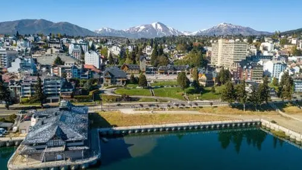
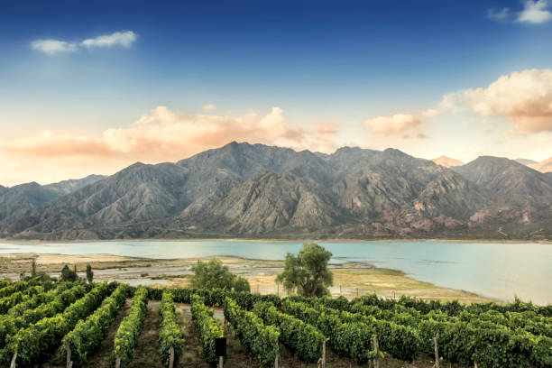
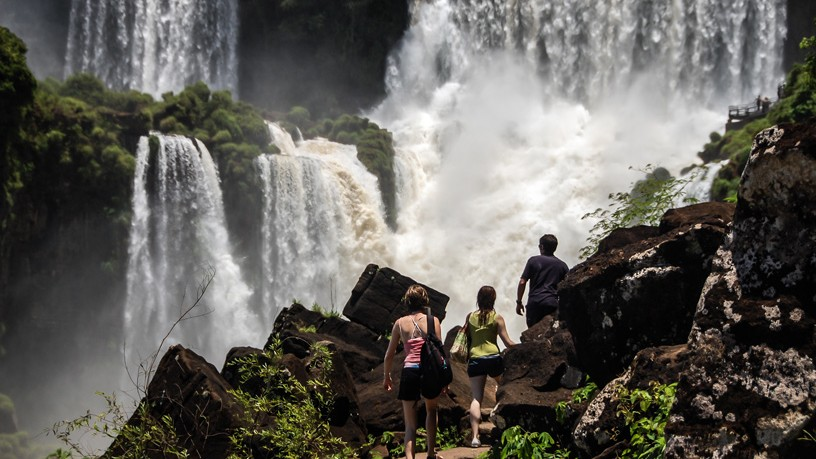
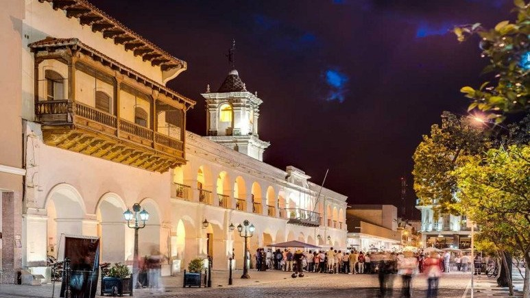
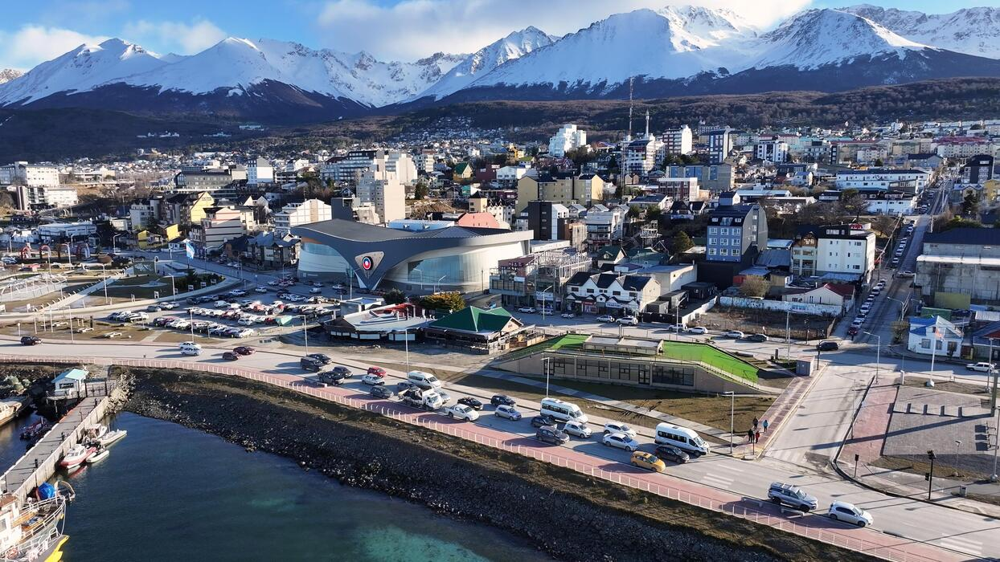
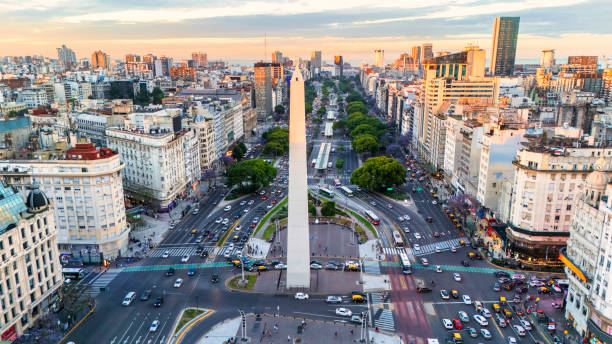

Lagos alpinos y magia patagónica.

Cordillera y la mejor ruta del vino.

La inmensidad de las cascadas.

Historia colonial y peñas folclóricas.

El punto final del continente.

Tango y arquitectura clásica porteña.